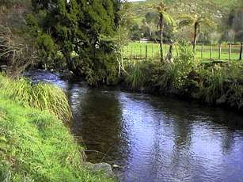
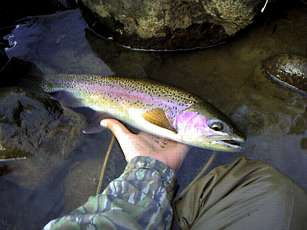

釣行日誌 ＮＺ編
ワイカトに、そして我が心にも冬は来たれり
2001/06/16 (SAT)
我慢できずに山岳渓流へ。今月末で禁漁となるので、どうしても行きたかったのだ。
今にもポツポツと泣き出しそうな曇天の中、雲の切れ目からかすかに見える青空に望みを託して車を走らせる。
牧場のそばを通るとき、馬の吐く息が白くなっているのが見えた。ワイカトに冬が来た。
夏には賑わっていたこの川も、こんな遅いシーズンに鱒を釣る人はさすがにいないようで、駐車場には車はない。いそいそとウェーダーを履き、身支度をして、河原でロッドをセットする。何度来ても、この、静かな興奮は心を熱くする。
水温は12度。悪くない。食い気のあるレインボーなら疑いなくドライフライをくわえるであろう。橋の下の長い淵からまめに釣り上がることにし、慎重に14番のロイヤルウルフを水面に浮かべる。いつもなら１尾は居ていいポイントだが、どこもかしこも静まり返っている。

『おかしいなぁ.....』
と、思いつつ、水の中に足を踏み入れ、静かに遡行して、一番奥の流れ込みを狙う。このあいだウェーダーの水漏れを直したので、今日は快適に川を歩ける。げにすさまじきはウェーダーにあいた小さな穴、シューズの中の小石、背後の小枝に掛かったお気に入りのフライ......
奥の流れ込みは、点在する石に主流がぶちあたり、魅惑的な青い深みができている。上に覆い被さる木の枝、背後に立ちはだかる灌木の茂みを避けつつ逆手で再度キャストしてウルフを送り込む。流れに乗った毛針が石の脇をかすめた時、黒い鼻面が水面を割り、毛針にのしかかって消えた。
『！』
かじかむ冬の空気を割って赤銅色の体側が空中に舞う。一転、15メートルほど下流に走り、二度、三度の跳躍。再度、上流に方向転換し、さらに驀進して最初の位置に戻って四度、五度の飛翔を見せる。
なぜ、この時期の鱒がこんなに強力なのかはわからないが、胴調子のパックロッドに無言の悲鳴を上げさせながら、青褐色の背中は水中を縦横無尽に駆けめぐった。
５分の後、見事なコンディションのレインボートラウトがネットの中に収まり、肩で息をしている。ファイトの途中で同じサイズの鱒が寄り添うように近づいてきたのが見えた。ペアリングが進行中らしい。
丁寧にフックを外し、慎重にリリースする。危険度以上の乳酸が、彼女の体内に蓄積されていないことを祈りつつ、後ろ姿を見送った。
今日の釣りが完成した。
その後、何尾か良い型の鱒を見かけたが、こちらがトロいのと、あちらがニブいのとでヒットを実らせることができずにフォードまで上がる。コンクリートの ford の上に、絶好のポイントがある。さっきの鱒に見切られたウルフに変えて、同じく14番のブルーダンを結ぶ。
執拗に長瀬の上端を攻めてみたが反応が無いのでそこをあきらめて上流へ歩き出す。流しっぱなしのフライをひょいっと引っ張ると、石に掛かったらしい。
『魚の口に掛かったときはあっけなく外れることが多いのに、なんで石や枝に掛かったときはこうもしっかり絡むのだろう......』
毒づきながら竿をあおると、水中の石が動きだして、そして跳ねた。これも良い型のレインボーである。（笑） 空中で見せた頬の赤さと大きさが尋常ではない。跳躍は一回こっきりで、あとは地味な持久型のファイトであったがかなり手こずらされた。
怒った顔をした雄。

オレにしか釣れない魚を釣るのだ、と誓って川面に立ち、
オレにでも釣れる魚しか釣れず、意気消沈して岸辺を去る。
ワイカトの冬、山岳渓流の午後。
釣行日誌ＮＺ編 目次へ
サイトマップ
ホームへ
お問い合わせ